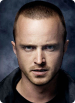
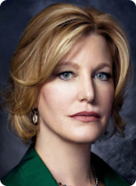
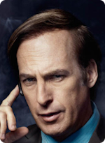
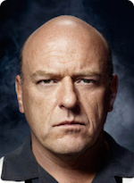
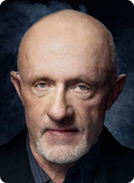

Breaking Bad Fan Page
Home
About |
Contact |
Cast of Characters
Walter White (aka Heisenberg)
Jesse Pinkman
Skylar White
Gustavo "Gus" Fring
Jimmy McGill (aka Saul Goodman)
Hank Schrader
Marie Schrader
Mike Ehrmantraut
Other Resources
Fanpop Fan Page
Sony Pictures Breaking Bad Page
Fandom Wiki
My
5
6 Favorite Episodes
(I couldn't pick just 5)
Season 5 / Epispode 15 - "Felina"
Season 1 / Episode 1 - "Pilot"
Season 5 / Episode 9 - "Blood Money"
Season 2 / Episode 8 - "Better Call Saul"
Season 5 / Episode 5 - "Dead Freight"
Season 2 / Episode 7 - "Negro Y Azul"
Bryan Cranston as
Walter White

Aaron Paul as
Jesse Pinkman

Anna Gunn as
Skylar White
Giancarlo Esposito as
Gustavo Fring

Bob Odenkirk as
Saul Goodman

Dean Norris as
Hank Schrader
Betsy Brandt as
Marie Schrader

Jonathan Banks as
Mike Ehrmantraut